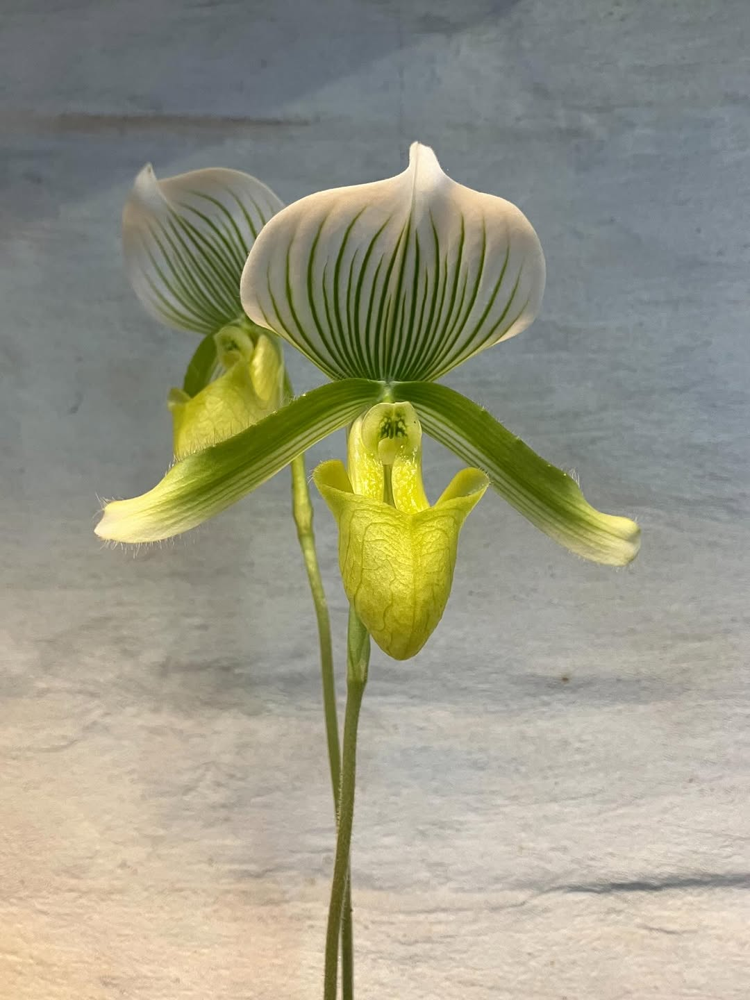

01 / Laboratoire du vivant
L'acces a l'experimentation et la R&D. Pas d'offre "catalogue" mais du sur-mesure et evolutif selon l'experimentation en lien avec l'interet pour les sciences naturelles.
01 / Laboratoire du vivant
L'acces a l'experimentation et la R&D. Pas d'offre "catalogue" mais du sur-mesure et evolutif selon l'experimentation en lien avec l'interet pour les sciences naturelles.
02 / L'approche globale
A la fois sciences/arts, a la fois macro/micro, orientee ecosystemes (faune/flore/humain). La promesse d'une vision a 360 degres qui autorise l'inclassable et le singulier.
03 / Valeur de la transmission
Une approche de long terme: orientation conseil ponctuel et accompagnement post-realisation pour garantir la coherence dans le temps.
